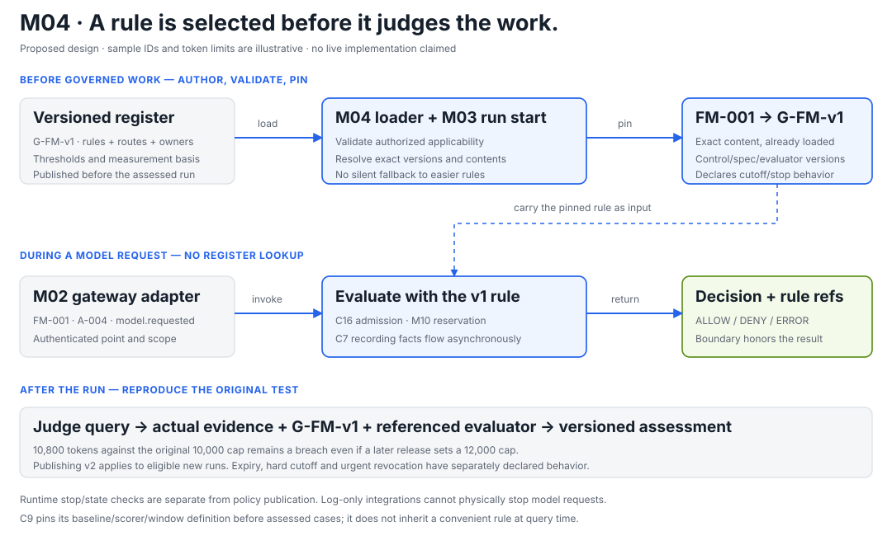

M04 / 16 · POLICY REGISTER AND CONTROL APPLICABILITY
Choose the rule first. Keep the version that judged the run.
M04 is the versioned rulebook. It stores the declared thresholds, measurement definitions, owners and mapping from actions to controls, independently of evaluator code.
M03 tells us which investigation and action we are looking at. M04 tells us which exact rule applies. M02 invokes the appropriate interface; the evaluator calculates; the enforcement point acts where it can.
Design status: proposed modules and illustrative policies. The 10,000-token cap is a teaching example, not our justified final threshold. No real policy release, workshop integration or passing control is claimed.

The register is outside the action's execution path. Reading an already-loaded rule is different from looking up the latest policy on every model call.
A useful rule contains more than a number.
For Control 16, our illustrative specification could say: total counted input and output tokens must be at most 10,000 for one fault-resolution run, covering all three agents and every real retry; zero over-cap runs are permitted in the declared assessed population.
Declaration
What must be written down
Metric and unit
Counted tokens per run. Specify treatment of cache, reasoning and any other reported usage categories without double counting.
Scope and allowance
All three subject agents and retries; exact run boundaries and assessed population; zero over-cap runs in this example. Declare whether assurance-model calls are included, and show their separate subtotal.
Threshold and comparison
actual_tokens <= 10000; exactly 10,000 is within the example limit. Optional admission instead checks actual usage + outstanding reservations + verified new-request bound against the same cap.
Measurement basis
Named authoritative execution/usage sources, deduplication rules, complete expected population and the rule for missing or conflicting usage.
Why this metric and value?
Document the intended purpose, harm and pre-assessment justification, such as an accepted prior reference or separate calibration. The assessed result cannot be used to choose its own passing limit.
Ownership and time
An actual named owner, authorized publication record, specification version, freeze date, effective interval and boundary conditions. Placeholders cannot pass release validation.
The slide asks us to supply and date these definitions before assessed work. It does not prescribe our final 10,000-token value. Retain actual publication/version history; writing an earlier date into a file after the test does not establish pre-declaration.
Control identity and version identity are different.
Identifier
Illustrative value
Purpose
Library control ID
ACN-COST-001
The stable reusable control: limit per-run token spend.
Team specification and revision
team-cost-rule / v1
Our exact metric, scope, limit, tolerance, owner and measurement definition.
Policy bundle revision
G-FM-v1
A frozen package containing selected C7/C9/C16 specifications plus applicability and referenced definitions.
Applicability revision
routes-v1
Which point/event invokes which control role and mode.
Evaluator version
c16-evaluator-v1
The code implementing the calculation. Preserve it with the rule so later results are reproducible.
These labels are proposed local identifiers. A new budget does not create a new library control. It creates a new specification revision and a bundle referencing it. Within a bundle, references must resolve to exact versions rather than mutable labels such as latest.
Follow run FM-001.
1 · Validate and publish the bundle before the run.
An authorized team configuration publisher supplies the actual named owner and justified definitions. The loader validates schema, units, comparison operators, source/baseline references, supported evaluator versions and unambiguous mappings. Publishing creates a retained version; a later edit requires a new revision.
A JSON/YAML file in a versioned repository or permitted store can be sufficient for the hackathon. M04 does not require a separate always-running service. Drafting with an LLM is possible, but the model and governed agents have no capability to publish or modify active rules.
2 · Pin the applicable bundle when opening FM-001.
The trusted lifecycle integration resolves the applicable authorized bundle and records FM-001 → G-FM-v1 before governed work. Pinning means retaining that exact content and its referenced revisions for this run, not following a changing pointer.
Repeated run-start delivery keeps the same binding. Workers load the pinned contents before accepting governed actions; a restarted worker must resolve that exact version, not silently fall back to the newest rule.
3 · Use the mapping when M02 receives an action.
For model.requested at the shared model gateway, the pinned mapping selects optional C16 admission and C7 request/decision recording. The live evaluator receives the already-loaded cap. M10 handles atomic reservations if inline prevention is implemented.
The caller cannot omit a required control or supply a more generous version. A monitoring role remains observational unless the published policy explicitly makes it blocking and the integration can enforce that behavior.
4 · Bind decisions and later tests to the same rule.
Decisions and assessments reference the run, control, specification, bundle and evaluator versions. M05/M06 preserve and bind the source facts. A later C16 test sums authoritative actual usage; a reservation is not measured spend.
The judge can reproduce “FM-001 used 10,800 tokens against its 10,000 cap” using the retained v1 rule and inputs. Publishing a 12,000-token v2 later does not turn that original breach into a pass. The required pass and breach demonstration uses unchanged declared rules.
Admission inline where supported; rich recording asynchronous.
Shared model gateway / outcome and usage
C16 accounting; C7 lifecycle evidence.
Collection and reconciliation after execution.
Gateway A or B / handoff
C7 sending/receiving records for declared scope.
Event-driven collection, followed by the recording test.
Declared diagnostic window / closure
C9 performance calculation and threshold-crossing alert.
Scheduled/window assessment, outside the model-call path.
A missing mapping for an in-scope event is a gap, not “no controls apply.” A deliberately out-of-scope event needs an explicit exclusion and rationale. Ambiguous or contradictory rules must be rejected during validation or handled by a predeclared deterministic composition rule.
Each control needs a complete measurement definition.
CONTROL 7
What should exist?
Expected actions/events from an accepted independent source; coverage target; timing threshold and allowance; valid clock domains and expected pairs; completeness and empty-population rules.
CONTROL 9
Compared with what?
Accepted labels, metric/scorer version, frozen positive baseline, eligible cohorts, window membership rule, drop limit, exception allowance and named alert recipient.
CONTROL 16
Which usage counts?
Run scope, exact counting semantics, cap and population allowance; authoritative execution inventory; duplicates, retries, unknown usage and optional admission-bound rules.
For C9, register the assessed population/window membership rule and freeze thresholds and baseline before the assessed cases execute. Pin each window to its own exact baseline/scorer/policy references and record actual member runs. Do not silently combine incompatible policy, model, dataset or baseline cohorts. Missing outcomes cannot be dropped to improve the score.
Publishing, expiry and revocation have different effects.
Proposed default for this design: ordinary releases affect new runs; existing runs retain their pinned rules up to their declared run deadline. The policy explicitly distinguishes selection expiry from any hard execution cutoff.
Situation
Declared behavior
v2 is published while FM-001 is active
FM-001 keeps v1. Eligible future runs use v2. Its budget is neither reset nor split between versions.
v1 expires for starting new runs
Do not open new runs under v1. Existing runs follow their pinned continuation/deadline rule. Historical tests still load v1.
A hard execution cutoff was declared
Where inline enforcement exists, stop new admission and dispatch at that cutoff using trusted runtime state/time. Preserve already-sent work and all subsequent evidence.
An urgent authorized revocation occurs
A separate authenticated stop mechanism updates runtime state; verified inline points check that state. Do not poll the register for every inference. Retain the reason and propagation status; immediate global stopping is unproven without verified delivery/coverage.
The register is unavailable
Existing runs can use their valid exact loaded bundle only while their declared continuation/stop conditions and runtime dependencies remain satisfied. New work without its required valid bundle cannot enter governed admission.
Revocation can halt future actions without rewriting the rule under which earlier actions occurred. A new interpretation, evaluator fix or late evidence creates a labelled assessment revision; the original stays reproducible. A retrospective what-if test must not replace the submitted result.
Missing rules produce explicit failures.
Wrong team, unsupported evaluator, unresolved required reference, missing policy or ambiguous applicability must not select an easier default. For a required inline gate, return a clear error and do not dispatch. For observation-only processing, retain evidence and report the policy/mapping gap; satisfaction of the affected claimed scope cannot be established through that gap. A separate substantiated breach remains visible.
The rule also does not create facts. Naming an expected source or baseline in configuration is insufficient: M05 must obtain and reconcile the source, and the relevant control must validate the measurement basis. The Nemotron investigator may explain cited policy contents, but cannot change limits, applicability or deterministic verdicts.
ServiceNow can receive the permitted governance records and findings through M14. Merely displaying a threshold in AI Control Tower does not establish that an AWS gateway enforces it; the integration contract and actual behavior require verification.
The six M04 subcomponents.
ID
Component
Concrete responsibility
M04.1
Versioned policy bundle store
Retain exact dated specifications and references; new contents require a new version.
M04.2
Threshold / allowance declarations
State metric, limit, exceptions, scope, rationale and named owner.
M04.3
Action-to-control mapping
Match point/event to control, specification, role and execution mode.
M04.4
Policy loader and pinning
Validate, resolve and bind exact versions before governed work.
M04.5
Measurement and completion definitions
Declare sources, baselines, eligibility, coverage and missing-data rules.
M04.6
Policy change / revocation rules
Define new-run selection, active-run continuation, cutoff, revocation and historical replay.
Implementation shape: versioned configuration plus shared loader/validator/applicability code. The evaluator accepts rules as input rather than storing its own threshold. Generate the human-readable threshold document from the same frozen definitions used by the code, and include those definitions in the judge's export.
INDEPENDENT AI REVIEW
Review focuses on changing rules without rewriting history.
The independent review checks identifier/version distinctions, pre-assessment publication, runtime independence from the register, expiry versus revocation, C9 window scope and error behavior. This is a review of the proposed design, not a runtime test.
Independent reviewer verdict: ACCEPT — no material blocker. The reviewed draft distinguishes policy identities, trusted pinning, expiry/cutoff/revocation, C9 window scope and mode-aware failures. The older foundation has been corrected to use the same expiry semantics.
NEXT · M05
Where do the actual facts come from?
M05 acquires and reconciles the records and independent expected-work sources required by the rules in M04.